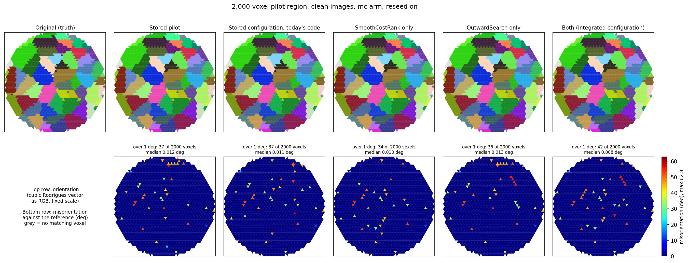

<title>Task G pilot maps</title>
<link rel="preconnect" href="https://fonts.googleapis.com">
<link rel="stylesheet" href="https://fonts.googleapis.com/css2?family=IBM+Plex+Mono:wght@400&family=IBM+Plex+Sans:wght@400;600&family=IBM+Plex+Serif:wght@600&display=swap">
<style>
:root {
  --bg: #f5f7f9; --surface: #ffffff; --fg: #1a2028; --muted: #5a6470; --rule: #d8dde3;
  --accent: #2c5d8a; --accent-soft: #e6eef6;
  --sans: "IBM Plex Sans", -apple-system, "Segoe UI", Roboto, sans-serif;
  --serif: "IBM Plex Serif", Georgia, serif;
  --mono: "IBM Plex Mono", ui-monospace, Menlo, Consolas, monospace;
}
@media (prefers-color-scheme: dark) {
  :root:not([data-theme="light"]) {
    --bg: #12161b; --surface: #1a2027; --fg: #e3e7ec; --muted: #9aa4af; --rule: #2e3742;
    --accent: #8db8e0; --accent-soft: #1d2a37; color-scheme: dark;
  }
}
:root[data-theme="dark"] {
  --bg: #12161b; --surface: #1a2027; --fg: #e3e7ec; --muted: #9aa4af; --rule: #2e3742;
  --accent: #8db8e0; --accent-soft: #1d2a37; color-scheme: dark;
}
body { background: var(--bg); color: var(--fg); font: 16px/1.6 var(--sans); padding: 0 16px; }
main { max-width: 72rem; margin: 0 auto; padding-block: 40px 72px; display: flex;
  flex-direction: column; gap: 10px; }
.prose { max-width: 46rem; }
h1, h2 { font-family: var(--serif); text-wrap: balance; line-height: 1.25; margin: 0; }
h1 { font-size: 1.9rem; font-weight: 600; }
h2 { font-size: 1.3rem; font-weight: 600; margin-top: 28px; padding-top: 14px;
  border-top: 1px solid var(--rule); }
p, ul { margin: 4px 0; }
.meta { color: var(--muted); font: 0.85rem var(--mono); }
code { font-family: var(--mono); font-size: 0.86em; background: var(--accent-soft);
  padding: 1px 5px; border-radius: 3px; overflow-wrap: anywhere; }
.table-wrap { overflow-x: auto; background: var(--surface); border: 1px solid var(--rule);
  border-radius: 4px; margin: 8px 0; }
table { border-collapse: collapse; width: 100%; font-size: 0.9rem; }
th, td { padding: 7px 12px; text-align: left; border-bottom: 1px solid var(--rule); }
th { color: var(--muted); font-size: 0.76rem; letter-spacing: 0.04em; text-transform: uppercase;
  font-weight: 600; }
tr:last-child td { border-bottom: 0; }
td.n, th.n { text-align: right; font-family: var(--mono); font-variant-numeric: tabular-nums;
  white-space: nowrap; }
figure { margin: 8px 0 0; overflow-x: auto; }
figure img { display: block; max-width: 100%; height: auto; background: #fff; border-radius: 4px;
  border: 1px solid var(--rule); }
figcaption { color: var(--muted); font-size: 0.88rem; margin-top: 6px; max-width: 46rem; }
</style>
<main>
  <h1>Task G pilot maps</h1>
  <p class="meta">Reference: Original (truth) · rand_500grains_1mm_neworient_s0.mic</p>
  <div class="prose">
    <p>The 2,000-voxel pilot region reconstructed five times with the same BFS seed order: the stored pilot (2026-10-10), the same configuration on today&#x27;s code (the like-for-like baseline: the centroid screen became the default on 2026-10-12), SmoothCostRank E3+E4 tau 0.25 alone (Task G3), OutwardSearch alone, and both (Task G2&#x27;s integrated configuration). Wrong voxels (more than 1 degree from the truth, of 2,000): stored pilot (2026-10-10): 37; stored configuration, today&#x27;s code: 37; SmoothCostRank only: 34; OutwardSearch only: 36; both (Task G2&#x27;s integrated configuration): 42. Grains lost (of 60): stored pilot (2026-10-10): 0; stored configuration, today&#x27;s code: 0; SmoothCostRank only: 0; OutwardSearch only: 1; both (Task G2&#x27;s integrated configuration): 1.</p>
    <h2>How to read the maps</h2>
    <p>Each figure has two rows. Top row: orientation maps, the reference first, then each reconstruction. Colour is the orientation reduced to the cubic fundamental zone, shown as its Rodrigues vector in red, green and blue on a fixed scale, so one orientation has the same colour in every panel. Bottom row: misorientation of each reconstruction against the reference, voxel by voxel, after cubic symmetry, from blue (0°) to red (62.8°, the largest misorientation cubic symmetry allows). Grey voxels have no matching voxel in that reconstruction. A wrong voxel is one more than 1° from the reference.</p>
  </div>
  <h2>Numbers</h2>
  <div class="table-wrap"><table>
    <thead><tr><th>Figure</th><th>Reconstruction</th><th class="n">Voxels compared</th>
    <th class="n">Wrong (over 1°)</th><th class="n">Median error of right voxels (°)</th>
    <th class="n">90th percentile (°)</th><th class="n">Max (°)</th></tr></thead>
    <tbody><tr><td>2,000-voxel pilot region, clean images, mc arm, reseed on</td><td>Stored pilot</td><td class='n'>2,000 of 2,000</td><td class='n'>37</td><td class='n'>0.0118</td><td class='n'>0.03</td><td class='n'>56.4</td></tr><tr><td>2,000-voxel pilot region, clean images, mc arm, reseed on</td><td>Stored configuration, today&#x27;s code</td><td class='n'>2,000 of 2,000</td><td class='n'>37</td><td class='n'>0.0101</td><td class='n'>0.03</td><td class='n'>57.3</td></tr><tr><td>2,000-voxel pilot region, clean images, mc arm, reseed on</td><td>SmoothCostRank only</td><td class='n'>2,000 of 2,000</td><td class='n'>34</td><td class='n'>0.0082</td><td class='n'>0.03</td><td class='n'>53.3</td></tr><tr><td>2,000-voxel pilot region, clean images, mc arm, reseed on</td><td>OutwardSearch only</td><td class='n'>2,000 of 2,000</td><td class='n'>36</td><td class='n'>0.0113</td><td class='n'>0.03</td><td class='n'>54.5</td></tr><tr><td>2,000-voxel pilot region, clean images, mc arm, reseed on</td><td>Both (integrated configuration)</td><td class='n'>2,000 of 2,000</td><td class='n'>42</td><td class='n'>0.0077</td><td class='n'>0.03</td><td class='n'>56.3</td></tr></tbody>
  </table></div>
  <h2>2,000-voxel pilot region, clean images, mc arm, reseed on</h2><figure><figcaption>Clean images, mc arm, revisit and reseed on, BFS rng seed 0. Paired by voxel against the stored configuration on today&#x27;s code: SmoothCostRank only: 14 fixed and 11 broken; OutwardSearch only: 18 fixed and 17 broken; both (Task G2&#x27;s integrated configuration): 15 fixed and 20 broken.</figcaption></figure>
  <h2>Notes</h2><ul class="prose"><li>Clean simulated images (no realistic noise); one BFS seed order (rng seed 0) per run.</li><li>Wrong means more than 1 degree from the truth after cubic symmetry.</li></ul>
  <p class="meta">Drawn with icenine_py/scripts/mic_maps_report.py and plot_mic.py.</p>
</main>
